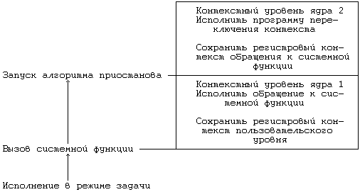
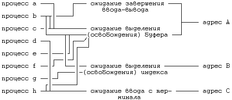

К настоящему моменту мы рассмотрели все функции работы с внутренними структурами процесса, выполняющиеся на нижнем уровне взаимодействия с процессом и обеспечивающие переход в состояние "выполнения в режиме ядра" и выход из этого состояния в другие состояния, за исключением функций, переводящих процесс в состояние "приостанова выполнения". Теперь перейдем к рассмотрению алгоритмов, с помощью которых процесс переводится из состояния "выполнения в режиме ядра" в состояние "приостанова в памяти" и из состояния приостанова в состояния "готовности к запуску" с выгрузкой и без выгрузки из памяти.

Рисунок 6.29. Стандартные контекстные уровни приостановленного процесса
Выполнение процесса приостанавливается обычно во время исполнения запрошенной им системной функции: процесс переходит в режим ядра (контекстный уровень 1), исполняя внутреннее прерывание операционной системы, и приостанавливается в ожидании ресурсов. При этом процесс переключает контекст, запоминая в стеке свой текущий контекстный уровень и исполняясь далее в рамках системного контекстного уровня 2 (Рисунок 6.29). Выполнение процессов приостанавливается также и в том случае, когда оно наталкивается на отсутствие страницы в результате обращения к виртуальным адресам, не загруженным физически; процессы не будут выполняться, пока ядро не считает содержимое страниц.
Как уже говорилось во второй главе, процессы приостанавливаются до наступления определенного события, после которого они "пробуждаются" и переходят в состояние "готовности к выполнению" (с выгрузкой и без выгрузки из памяти). Такого рода абстрактное рассуждение недалеко от истины, ибо в конкретном воплощении совокупность событий отображается на совокупность виртуальных адресов (ядра). Адреса, с которыми связаны события, закодированы в ядре, и их единственное назначение состоит в их использовании в процессе отображения ожидаемого события на конкретный адрес. Как для абстрактного рассмотрения, так и для конкретной реализации события безразлично, сколько процессов одновременно ожидают его наступления. Как результат, возможно возникновение некоторых противоречий. Во-первых, когда событие наступает и процессы, ожидающие его, соответствующим образом оповещаются об этом, все они "пробуждаются" и переходят в состояние "готовности к выполнению". Ядро выводит процессы из состояния приостанова все сразу, а не по одному, несмотря на то, что они в принципе могут конкурировать за одну и ту же заблокированную структуру данных и большинство из них через небольшой промежуток времени опять вернется в состояние приостанова (более подробно об этом шла речь в главах 2 и 3). На Рисунке 6.30 изображены несколько процессов, приостановленных до наступления определенных событий.

Рисунок 6.30. Процессы, приостановленные до наступления событий, и отображение событий на конкретные адреса
Еще одно противоречие связано с тем, что на один и тот же адрес могут отображаться несколько событий. На Рисунке 6.30, например, события "освобождение буфера" и "завершение ввода-вывода" отображаются на адрес буфера ("адрес A"). Когда ввод-вывод в буфер завершается, ядро возобновляет выполнение всех процессов, приостановленных в ожидании наступления как того, так и другого события. Поскольку процесс, ожидающий завершения ввода-вывода, удерживает буфер заблокированным, другие процессы, которые ждали освобождения буфера, вновь приостановятся, ибо буфер все еще занят. Функционирование системы было бы более эффективным, если бы отображение событий на адреса было однозначным. Однако на практике такого рода противоречие на производительности системы не отражается, поскольку отображение на один адрес более одного события имеет место довольно редко, а также поскольку выполняющийся процесс обычно освобождает заблокированные ресурсы до того, как начнут выполняться другие процессы. Стилистически, тем не менее, механизм функционирования ядра стал бы более понятен, если бы отображение было однозначным.
алгоритм sleep
входная информация: (1) адрес приостанова
(2) приоритет
выходная информация: 1, если процесс возобновляется по сиг-
налу, который ему удалось уловить;
вызов алгоритма longjump, если процесс
возобновляется по сигналу, который ему
не удалось уловить;
0 - во всех остальных случаях;
{
поднять приоритет работы процессора таким образом, чтобы
заблокировать все прерывания;
перевести процесс в состояние приостанова;
включить процесс в хеш-очередь приостановленных процес-
сов, базирующуюся на адресах приостанова;
сохранить адрес приостанова в таблице процессов;
сделать ввод для процесса приоритетным;
если (приостанов процесса НЕ допускает прерываний)
{
выполнить переключение контекста;
/* с этого места процесс возобновляет выполнение,
когда "пробуждается" */
снизить приоритет работы процессора так, чтобы вновь
разрешить прерывания (как было до приостанова про-
цесса);
возвратить (0);
}
/* приостанов процесса принимает прерывания, вызванные
сигналами */
если (к процессу не имеет отношения ни один из сигналов)
{
выполнить переключение контекста;
/* с этого места процесс возобновляет выполнение,
когда "пробуждается" */
если (к процессу не имеет отношения ни один из сигна-
лов)
{
восстановить приоритет работы процессора таким,
каким он был в момент приостанова процесса;
возвратить (0);
}
}
удалить процесс из хеш-очереди приостановленных процес-
сов, если он все еще находится там;
восстановить приоритет работы процессора таким, каким он
был в момент приостанова процесса;
если (приоритет приостановленного процесса позволяет
принимать сигналы)
возвратить (1);
запустить алгоритм longjump;
}
|
Рисунок 6.31. Алгоритм приостанова процесса
На Рисунке 6.31 приведен алгоритм приостанова процесса. Сначала ядро повышает приоритет работы процессора так, чтобы заблокировать все прерывания, которые могли бы (путем создания конкуренции) помешать работе с очередями приостановленных процессов, и запоминает старый приоритет, чтобы восстановить его, когда выполнение процесса будет возобновлено. Процесс получает пометку "приостановленного", адрес приостанова и приоритет запоминаются в таблице процессов, а процесс помещается в хеш-очередь приостановленных процессов. В простейшем случае (когда приостанов не допускает прерываний) процесс выполняет переключение контекста и благополучно "засыпает". Когда приостановленный процесс "пробуждается", ядро начинает планировать его запуск: процесс возвращает сохраненный в алгоритме sleep контекст, восстанавливает старый приоритет работы процессора (который был у него до начала выполнения алгоритма) и возвращает управление ядру.
алгоритм wakeup /* возобновление приостановленного про-
цесса */
входная информация: адрес приостанова
выходная информация: отсутствует
{
повысить приоритет работы процессора таким образом, что-
бы заблокировать все прерывания;
найти хеш-очередь приостановленных процессов с указанным
адресом приостанова;
для (каждого процесса, приостановленного по указанному
адресу)
{
удалить процесс из хеш-очереди;
сделать пометку о том, что процесс находится в состо-
янии "готовности к запуску";
включить процесс в список процессов, готовых к запус-
ку (для планировщика процессов);
очистить поле, содержащее адрес приостанова, в записи
таблицы процессов;
если (процесс не загружен в память)
возобновить выполнение программы подкачки (нуле-
вой процесс);
в противном случае
если (возобновляемый процесс более подходит для ис-
полнения, чем ныне выполняющийся)
установить соответствующий флаг для планировщи-
ка;
}
восстановить первоначальный приоритет работы процессора;
}
|
Рисунок 6.32. Алгоритм возобновления приостановленного процесса
Чтобы возобновить выполнение приостановленных процессов, ядро обращается к алгоритму wakeup (Рисунок 6.32), причем делает это как во время исполнения алгоритмов реализации стандартных системных функций, так и в случае обработки прерываний. Алгоритм iput, например, освобождает заблокированный индекс и возобновляет выполнение всех процессов, ожидающих снятия блокировки. Точно так же и программа обработки прерываний от диска возобновляет выполнение процессов, ожидающих завершения ввода-вывода. В алгоритме wakeup ядро сначала повышает приоритет работы процессора, чтобы заблокировать прерывания. Затем для каждого процесса, приостановленного по указанному адресу, выполняются следующие действия: делается пометка в поле, описывающем состояние процесса, о том, что процесс готов к запуску; процесс удаляется из списка приостановленных процессов и помещается в список процессов, готовых к запуску; поле в записи таблицы процессов, содержащее адрес приостанова, очищается. Если возобновляемый процесс не загружен в память, ядро запускает процесс подкачки, обеспечивающий подкачку возобновляемого процесса в память (подразумевается система, в которой подкачка страниц по обращению не поддерживается); в противном случае, если возобновляемый процесс более подходит для исполнения, чем ныне выполняющийся, ядро устанавливает для планировщика специальный флаг, сообщающий о том, что процессу по возвращении в режим задачи следует пройти через алгоритм планирования (глава 8). Наконец, ядро восстанавливает первоначальный приоритет работы процессора. При этом на ядро не оказывается никакого давления: "пробуждение" (wakeup) процесса не вызывает его немедленного исполнения; благодаря "пробуждению", процесс становится только доступным для запуска.
Все, о чем говорилось выше, касается простейшего случая выполнения алгоритмов sleep и wakeup, поскольку предполагается, что процесс приостанавливается до наступления соответствующего события. Во многих случаях процессы приостанавливаются в ожидании событий, которые "должны" наступить, например, в ожидании освобождения ресурса (индексов или буферов) или в ожидании завершения ввода-вывода, связанного с диском. Уверенность процесса в неминуемом возобновлении основана на том, что подобные ресурсы могут быть предоставлены только во временное пользование. Тем не менее, иногда процесс может приостановиться в ожидании события, не будучи уверенным в неизбежном наступлении последнего, в таком случае у процесса должна быть возможность в любом случае вернуть себе управление и продолжить выполнение. В подобных ситуациях ядро немедленно нарушает "сон" приостановленного процесса, посылая ему сигнал. Более подробно о сигналах мы поговорим в следующей главе; здесь же примем допущение, что ядро может (выборочно) возобновлять приостановленные процессы по сигналу и что процесс может распознавать получаемые сигналы.
Например, если процесс обратился к системной функции чтения с терминала, ядро не будет в состоянии выполнить запрос процесса до тех пор, пока пользователь не введет данные с клавиатуры терминала (глава 10). Тем не менее, пользователь, запустивший процесс, может оставить терминал на весь день, при этом процесс останется приостановленным в ожидании ввода, а терминал может понадобиться другому пользователю. Если другой пользователь прибегнет к решительным мерам (таким как выключение терминала), ядро должно иметь возможность восстановить отключенный процесс: в качестве первого шага ядру следует возобновить приостановленный процесс по сигналу. В том, что процессы могут приостановиться на длительное время, нет ничего плохого. Приостановленный процесс занимает позицию в таблице процессов и может поэтому удлинять время поиска (ожидания) путем выполнения определенных алгоритмов, которые не занимают время центрального процессора и поэтому выполняются практически незаметно.
Чтобы как-то различать между собой состояния приостанова, ядро устанавливает для приостанавливаемого процесса (при входе в это состояние) приоритет планирования на основании соответствующего параметра алгоритма sleep. То есть ядро запускает алгоритм sleep с параметром "приоритет", в котором отражается наличие уверенности в неизбежном наступлении ожидаемого события. Если приоритет превышает пороговое значение, процесс не будет преждевременно выходить из приостанова по получении сигнала, а будет продолжать ожидать наступления события. Если же значение приоритета ниже порогового, процесс будет немедленно возобновлен по получении сигнала (****).
Проверка того, имеет ли процесс уже сигнал при входе в алгоритм sleep, позволяет выяснить, приостанавливался ли процесс ранее. Например, если значение приоритета в вызове алгоритма sleep превышает пороговое значение, процесс приостанавливается в ожидании выполнения алгоритма wakeup. Если же значение приоритета ниже порогового, выполнение процесса не приостанавливается, но на сигнал процесс реагирует точно так же, как если бы он был приостановлен. Если ядро не проверит наличие сигналов перед приостановом, возможна опасность, что сигнал больше не поступит вновь и в этом случае процесс никогда не возобновится.
Когда процесс "пробуждается" по сигналу (или когда он не переходит в состояние приостанова из-за наличия сигнала), ядро может выполнить алгоритм longjump (в зависимости от причины, по которой процесс был приостановлен). С помощью алгоритма longjump ядро восстанавливает ранее сохраненный контекст, если нет возможности завершить выполняемую системную функцию. Например, если из-за того, что пользователь отключил терминал, было прервано чтение данных с терминала, функция read не будет завершена, но возвратит признак ошибки. Это касается всех системных функций, которые могут быть прерваны во время приостанова. После выхода из приостанова процесс не сможет нормально продолжаться, поскольку ожидаемое событие не наступило. Перед выполнением большинства системных функций ядро сохраняет контекст процесса, используя алгоритм setjump и вызывая тем самым необходимость в последующем выполнении алгоритма longjump.
Встречаются ситуации, когда ядро требует, чтобы процесс возобновился по получении сигнала, но не выполняет алгоритм longjump. Ядро запускает алгоритм sleep со специальным значением параметра "приоритет", подавляющим исполнение алгоритма longjump и заставляющим алгоритм sleep возвращать код, равный 1. Такая мера более эффективна по сравнению с немедленным выполнением алгоритма setjump перед вызовом sleep и последующим выполнением алгоритма longjump для восстановления первоначального контекста процесса. Задача заключается в том, чтобы позволить ядру очищать локальные структуры данных. Драйвер устройства, например, может выделить свои частные структуры данных и приостановиться с приоритетом, допускающим прерывания; если по сигналу его работа возобновляется, он освобождает выделенные структуры, а затем выполняет алгоритм longjump, если необходимо. Пользователь не имеет возможности проконтролировать, выполняет ли процесс алгоритм longjump; выполнение этого алгоритма зависит от причины приостановки процесса, а также от того, требуют ли структуры данных ядра внесения изменений перед выходом из системной функции.
(****) Словами "выше" и "ниже" мы заменяем термины "высокий приоритет" и "низкий приоритет". Однако на практике приоритет может измеряться числами, более низкие значения которых подразумевают более высокий приоритет.
Предыдущая глава || Оглавление || Следующая глава